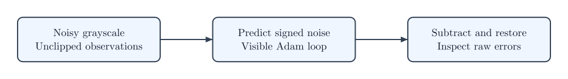
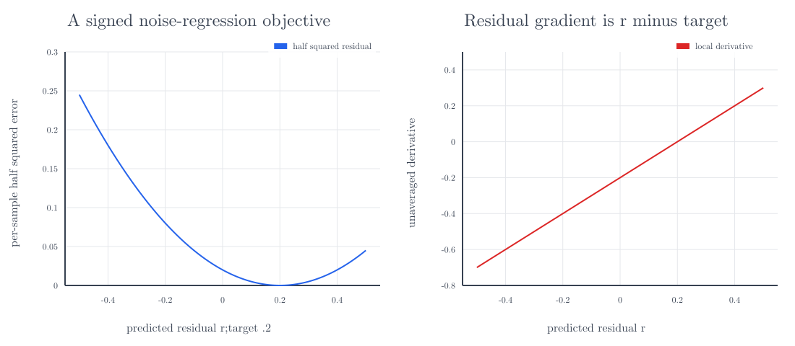
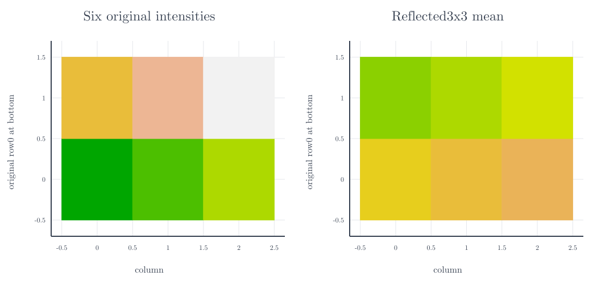
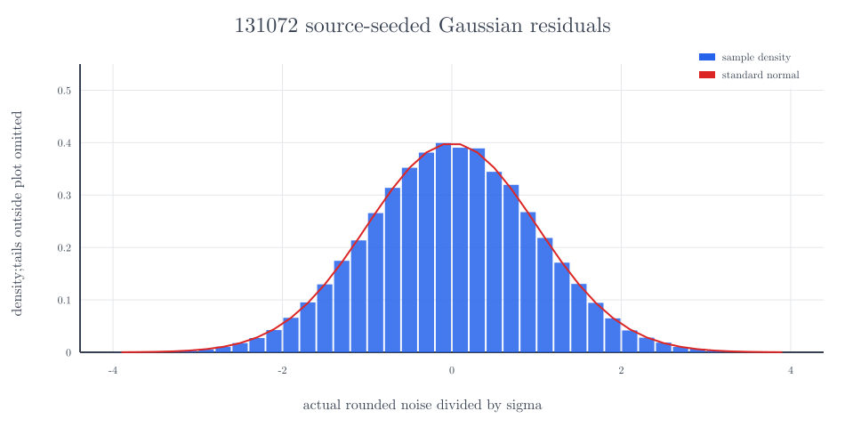
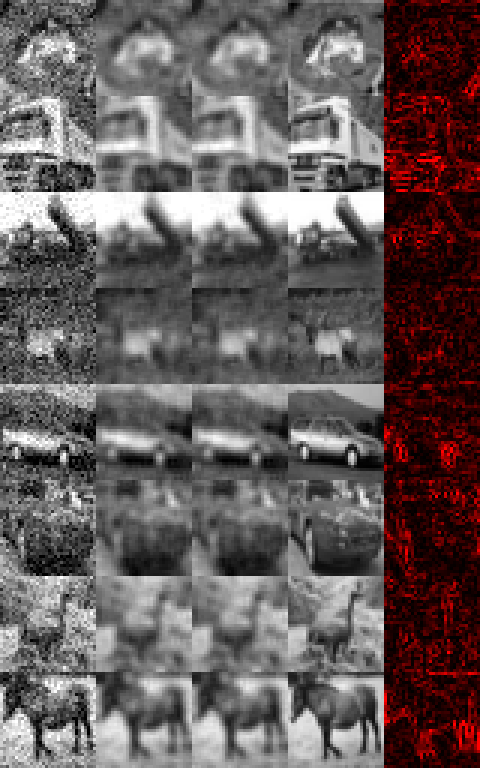
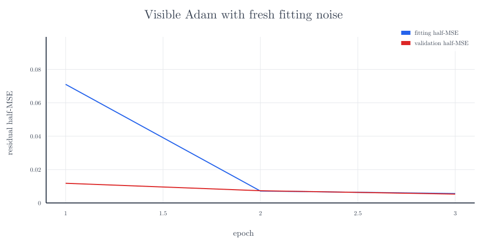
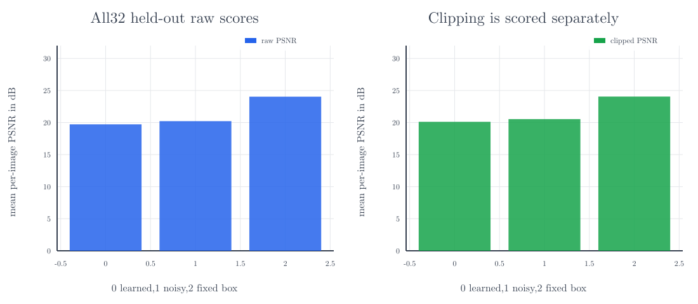
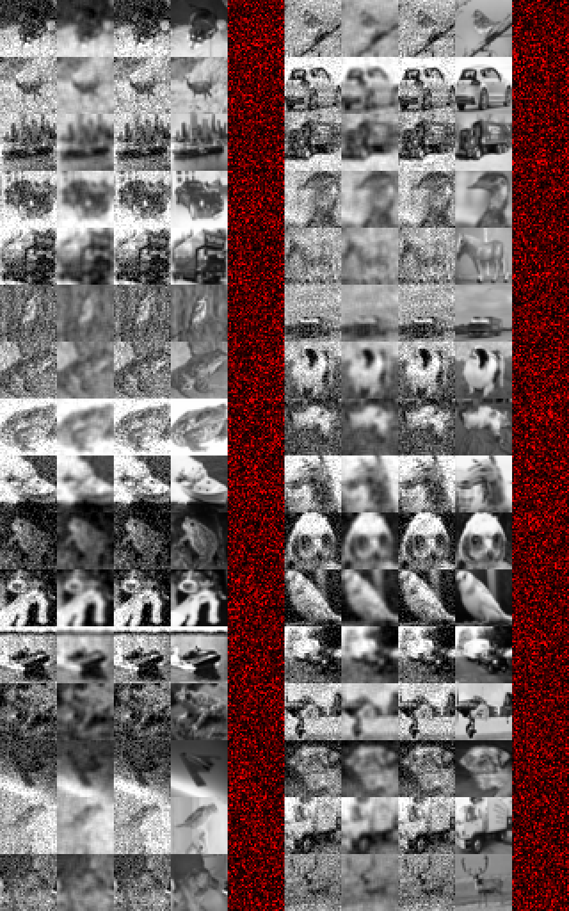

DnCNN: explicit tensor residual denoising
Abstract
An image corrupted by additive Gaussian noise should recover clean intensities without losing real structure. This example predicts signed noise and subtracts it,starting with hand residual/filter checks and the actual Gaussian stream. Full and compact17-layer graphs,real CIFAR previews,visible Adam and paired BN restoration make the short denoising fit reproducible.
Source example: examples/cpp/source/nn/1_convolutional_neural_networks/1.8_other_vision_tasks/dncnn.cpp.
The method
For y=x+v,a convolutional residual predictor estimates v from y alone. Its half-MSE objective supervises the actual rounded additive residual. Orthogonal convolutions and moving batch normalization retain the source 17-layer connectivity. Every preprocessing,objective,inference and scoring operation uses tensors;host containers carry only metadata,RNG draws and plot presentation values.
The concept diagram below is drawn by dm::graphics::Diagram. Its editable C++
source is the complete block below; regeneration uses the same datamunge toolchain
as the numerical examples. Exports consume the saved local SVG.
#include <dm/dm.hpp>
int main() {
std::filesystem::create_directories("build");
dm::graphics::Diagram diagram;
diagram.node("n0", {0.0, 0}, "Noisy grayscale\nUnclipped observations");
diagram.node("n1", {5.2, 0}, "Predict signed noise\nVisible Adam loop");
diagram.node("n2", {10.4, 0}, "Subtract and restore\nInspect raw errors");
diagram.edge("n0", "n1").edge("n1", "n2");
diagram.save_svg("build/dncnn_concept.svg");
}
Executed tensor architecture
This figure executes the inference configuration shown in the code, using a zero-valued shape probe without fitting or loading a checkpoint. Named stage boundaries group whole subgraphs where available; other nodes retain functional-layer detail. Exact batch-inclusive shapes and reachable parameter totals come from the trace. Shared linear scales map spatial dimensions and channel counts to blocks; the one-pixel visibility floor is disclosed in the legend. Labels use compact monospace text, rotate counterclockwise and sit beside their own glyphs. Arrows flow left to right; wide diagrams scroll at native size on the website.
#include <dm/dm.hpp>
int main() {
namespace n = dm::nn;
namespace m = n::models;
n::set_num_threads(2);
std::filesystem::create_directories("build");
n::ParameterStore p(17), state(18);
n::Module architecture_model(
[&](const n::Tensor& image) { return m::DnCNN(p, state, image, 16).clean; },
"DnCNN: explicit tensor residual denoising");
n::ModelPlotOptions options;
options.style = n::ModelPlotStyle::Flow;
options.detail = n::ModelPlotDetail::Blocks;
options.labels = {.type = n::ModelPlotLabel::NameAndShape, .size = 12, .wrap = 24};
options.spacing = {.layer = 24, .lane = 12, .label = 8, .margin = 20};
options.sizing.spatial_size = 96;
options.sizing.channel_size = 42;
options.sizing.minimum_extent = 1;
options.opacity = .8;
const auto diagram = architecture_model.plot(n::zeros({1, 32, 32, 1}), options);
diagram.save_svg("build/dncnn_architecture.svg");
std::print(
"{} displayed nodes; {} reachable learned values.\n",
diagram.nodes().size(),
diagram.parameter_count());
}51 displayed nodes; 35344 reachable learned values.

Predict signed noise,and subtract it
For a noisy observation y=x+v,the network predicts r_theta(y),and its clean estimate is y-r_theta(y). The source objective is \(L=\tfrac12\operatorname{mean}(r-v)^2\),so each noise-output derivative is (r-v)/numel. The clean shortcut has derivatives+1 with respect to y and-1 with respect to predicted r. Neither input nor output is clamped during fitting. Clipping appears only in the declared display/clipped-PSNR comparison.
#include <dm/dm.hpp>
int main() {
namespace n = dm::nn;
namespace m = n::models;
const auto r = n::arange(-.5, .5001, .01, n::DType::Float64).requires_grad_();
const auto target = n::full(r.shape(), .2, n::DType::Float64);
const auto loss = m::DnResidualLoss(r, target),
gradient = n::grad(loss, {r})[0] * double(r.numel());
auto a = dm::graphics::RPlot::create(), b = dm::graphics::RPlot::create();
a.lines(r.to_vector<double>(), (.5 * n::square(r - .2)).to_vector<double>(),
"half squared residual", {37, 99, 235})
.title("A signed noise-regression objective")
.x_label("predicted residual r;target .2")
.y_label("per-sample half squared error")
.y_limits(0, .3);
b.lines(r.to_vector<double>(), gradient.to_vector<double>(), "local derivative",
{220, 38, 38})
.title("Residual gradient is r minus target")
.x_label("predicted residual r")
.y_label("unaveraged derivative")
.y_limits(-.8, .5);
std::filesystem::create_directories("build");
auto layout = dm::graphics::RLayout::create(1, 2);
layout.add(a).add(b).size(1100, 480).fit_panels().save_svg("build/dncnn_residual.svg");
const auto result = m::DnSubtract(n::tensor({-.2, 1.2}), n::tensor({.1, -.2}));
std::print(
"Unclipped signed subtraction: {:.3f},{:.3f};no activation at the clean output.\n",
result.to_vector<double>()[0], result.to_vector<double>()[1]);
}Unclipped signed subtraction: -0.300,1.400;no activation at the clean output.

A reflected mean-filter reference
A fixed3x3 mean has no fitted parameters. At a boundary,it reflects sample indices without duplicating the edge. On the2x3 array[[0,1,2],[3,4,5]],the upper-left3x3 neighborhood averages to8/3. The full result is [[8/3,3,10/3],[5/3,2,7/3]]. Singleton axes are supported too. Native oracles check every reflected value and every input derivative on several geometries.
#include <dm/dm.hpp>
int main() {
namespace n = dm::nn;
namespace m = n::models;
const auto x = n::tensor({0., 1., 2., 3., 4., 5.}, {1, 2, 3, 1});
const auto y = m::DnBoxFilter(x);
auto a = n::plot_tensor_map(n::reverse(x.reshape({2, 3}), {0}), 0, 5),
b = n::plot_tensor_map(n::reverse(y.reshape({2, 3}), {0}), 0, 5);
a.title("Six original intensities").x_label("column").y_label("original row0 at bottom");
b.title("Reflected3x3 mean").x_label("column").y_label("original row0 at bottom");
std::filesystem::create_directories("build");
auto layout = dm::graphics::RLayout::create(1, 2);
layout.add(a).add(b).size(1050, 500).fit_panels().save_svg("build/dncnn_filter.svg");
std::print("Reflected upper-left mean {:.6f};reflection maps index-1 on length3 to {}.\n",
y.to_vector<double>()[0], m::DnReflect(-1, 3));
}Reflected upper-left mean 2.666667;reflection maps index-1 on length3 to 1.

Check the actual Gaussian stream
The corruption helper draws source-order53-bit integers from mt19937_64. All subsequent uniform scaling and Box–Muller operations use Float64 tensors: \(u=(k+1)/2^{53}\),\(R=\sqrt{-2\log u}\), \(z_1=R\cos(2\pi v),z_2=R\sin(2\pi v)\). The noisy pixel is float32(clean+sigma*z),and the supervised residual is that rounded noisy value minus clean. A repeated seed reproduces;fresh fitting seeds change each epoch. No noisy-input clipping is applied.
#include <dm/dm.hpp>
int main() {
namespace n = dm::nn;
namespace m = n::models;
const auto clean = n::tile(n::tensor({0., 1.}), {65536}).reshape({128, 32, 32, 1});
const auto sample = m::DnCorrupt(clean, 25. / 255, 101);
const auto z = sample.noise.to(n::DType::Float64).reshape({-1}) / (25. / 255);
const auto edges = n::arange(-4., 4.0001, .2, n::DType::Float64),
left = n::slice_axis(edges, 0, 0, 40), right = n::slice_axis(edges, 0, 1, 41),
centers = (left + right) / 2.;
const auto hits = n::logical_and(n::greater_equal(z.reshape({-1, 1}), left.reshape({1, 40})),
n::less(z.reshape({-1, 1}), right.reshape({1, 40})));
const auto density = n::sum(hits.to(n::DType::Float64), {0}) / (double(z.numel()) * .2);
const auto pdf = n::exp(-.5 * n::square(centers)) / std::sqrt(2 * std::numbers::pi);
const auto metric = m::ScoreTensorDn(sample.noisy, clean);
auto p = dm::graphics::RPlot::create();
p.bars(centers.to_vector<double>(), density.to_vector<double>(), "sample density",
{37, 99, 235}, .18)
.lines(centers.to_vector<double>(), pdf.to_vector<double>(), "standard normal",
{220, 38, 38})
.title("131072 source-seeded Gaussian residuals")
.x_label("actual rounded noise divided by sigma")
.y_label("density;tails outside plot omitted")
.y_limits(0, .55)
.size(950, 480);
std::filesystem::create_directories("build");
p.save_svg("build/dncnn_noise.svg");
std::print("Standardized residual mean {:.6f},second moment {:.6f},fourth moment "
"{:.6f};unclipped boundary pixels outside[0,1] fraction {:.6f}.\n",
n::mean(z).item(), n::mean(n::square(z)).item(), n::mean(n::pow(z, 4)).item(),
metric.outside.item());
}Standardized residual mean 0.001154,second moment 0.992207,fourth moment 2.943705;unclipped boundary pixels outside[0,1] fraction 0.501335.

Full and compact17-layer graphs
The first3x3 convolution has the only convolution bias. Fifteen hidden bias-free Conv/BN/ReLU stages follow;the last bias-free linear convolution predicts noise. Flattened kernels use orthogonal initialization,with orthogonal columns when fan-in permits and rows otherwise. BN epsilon is1e-4,old-state retention.05(new-batch weight.95). Training moments use population variance; saved moving variance uses the unbiased correction.
#include <dm/dm.hpp>
int main() {
namespace n = dm::nn;
namespace m = n::models;
n::set_num_threads(2);
std::print("| width | learned scalars | learned tensors | BN scalars/tensors | stages "
"|\n|---:|---:|---:|---|---:|\n");
for (int width : {64, 16}) {
n::ParameterStore p(3), state(4);
const auto x = (.5 + .7 * n::sin(n::arange(0, 2 * 19 * 21, 1, n::DType::Float64) * .17))
.to(n::DType::Float32)
.reshape({2, 19, 21, 1})
.requires_grad_();
const auto target = (.1 * n::cos(n::arange(0, 2 * 19 * 21, 1, n::DType::Float64) * .13))
.to(n::DType::Float32)
.reshape({2, 19, 21, 1});
const auto out = m::DnCNN(p, state, x, width, true, false);
auto leaves = p.parameters();
leaves.push_back(x);
const auto gradients = n::grad(m::DnResidualLoss(out.noise, target), leaves);
for (const auto &g : gradients)
if (!n::all(n::less(n::abs(g), INFINITY)).item<bool>() ||
n::sum(n::square(g.to(n::DType::Float64))).item() <= 0)
return 1;
for (std::size_t i = 0; i < out.stages.size(); ++i)
if (out.stages[i].shape() != n::Shape{2, 19, 21, i == 16 ? 1 : width})
return 1;
std::print("| {} | {} | {} | {}/{} | {} |\n", width, p.count(), p.size(), state.count(),
state.size(), out.stages.size());
}
}| width | learned scalars | learned tensors | BN scalars/tensors | stages |
|---|---|---|---|---|
| 64 | 556096 | 48 | 1920/30 | 17 |
| 16 | 35344 | 48 | 480/30 | 17 |
Actual natural images and observed corruption
CIFAR training rows0–255 fit the model;training256–287 form validation.
Official-test rows128–159 are held out. Convert original32px encoded RGB
to grayscale using.299R+.587G+.114B,then apply sigma25/255 AWGN. Validation
and test seeds43/47 remain fixed. The fitting probe uses seed41;training
uses fresh5300+epoch corruption. The existing official CIFAR cache follows
DATAMUNGE_DATA_DIR or XDG/home dataset paths. Class labels are unused.
#include <dm/dm.hpp>
int main() {
namespace n = dm::nn;
namespace m = n::models;
n::set_num_threads(2);
std::filesystem::path cache;
if (const auto *p = std::getenv("DATAMUNGE_DATA_DIR"))
cache = p;
else if (const auto *p = std::getenv("XDG_CACHE_HOME"))
cache = std::filesystem::path(p) / "datamunge/datasets";
else
cache = std::filesystem::path(std::getenv("HOME")) / ".cache/datamunge/datasets";
dm::datasets::fetch("cifar10", (cache / "cifar10").string());
constexpr double sigma = 25. / 255;
const auto raw =
n::data::LoadCifar({cache / "cifar10/data_batch_1.bin"}, n::data::Cifar::k10),
testing =
n::data::LoadCifar({cache / "cifar10/test_batch.bin"}, n::data::Cifar::k10);
std::vector<std::size_t> fi(256), vi(32), ti(32);
std::iota(fi.begin(), fi.end(), 0);
std::iota(vi.begin(), vi.end(), 256);
std::iota(ti.begin(), ti.end(), 128);
const auto clean = m::DnImages(raw.images, fi);
const auto fixed = m::DnCorrupt(clean, sigma, 41),
validation = m::DnCorrupt(m::DnImages(raw.images, vi), sigma, 43),
test = m::DnCorrupt(m::DnImages(testing.images, ti), sigma, 47);
const auto first = m::DnBatch(fixed, {0, 1, 2, 3, 4, 5, 6, 7});
const auto box = m::DnBoxFilter(first.noisy);
std::filesystem::create_directories("build");
n::save_image_grid(m::DnPreviewTiles(first, box, box), "build/dncnn_inputs.png", 1, 0, 1, 0,
0, 3);
const auto score = m::ScoreTensorDn(test.noisy, test.clean);
std::print(
"Fit/validation/test {}/{}/{};sigma {:.8f};fixed test raw noisy PSNR {:.6f}dB,outside "
"fraction {:.6f}.\nPreview rows:noisy|fixed box|box repeated|clean|4x red box error.\n",
clean.size(0), validation.clean.size(0), test.clean.size(0), sigma, score.psnr.item(),
score.outside.item());
}Fit/validation/test 256/32/32;sigma 0.09803922;fixed test raw noisy PSNR 20.219740dB,outside fraction 0.048920. Preview rows:noisy|fixed box|box repeated|clean|4x red box error.

Visible Adam with paired BN restoration
Warm all48 learned leaves and30 moving tensors before constructing Adam(.001). Each epoch draws fresh fitting corruption,then visits all256 images once in 8-image batches. The visible loss is residual half-MSE. Select the paired learned/BN checkpoint by inference-mode validation half-MSE. A separate restored graph receives only noisy images,and must preserve every stored value and single/batch agreement. Raw output stays unclipped.
Compare all32 held-out images with the noisy input and the fixed reflected mean filter. Both references have no fitted coefficients or optimizer. Mean per-image raw/clipped PSNR and pooled MSE are reported separately.
#include <dm/dm.hpp>
int main() {
namespace n = dm::nn;
namespace m = n::models;
n::set_num_threads(2);
std::filesystem::path cache;
if (const auto *p = std::getenv("DATAMUNGE_DATA_DIR"))
cache = p;
else if (const auto *p = std::getenv("XDG_CACHE_HOME"))
cache = std::filesystem::path(p) / "datamunge/datasets";
else
cache = std::filesystem::path(std::getenv("HOME")) / ".cache/datamunge/datasets";
dm::datasets::fetch("cifar10", (cache / "cifar10").string());
constexpr double sigma = 25. / 255;
const auto raw =
n::data::LoadCifar({cache / "cifar10/data_batch_1.bin"}, n::data::Cifar::k10),
testing =
n::data::LoadCifar({cache / "cifar10/test_batch.bin"}, n::data::Cifar::k10);
std::vector<std::size_t> fi(256), vi(32), ti(32);
std::iota(fi.begin(), fi.end(), 0);
std::iota(vi.begin(), vi.end(), 256);
std::iota(ti.begin(), ti.end(), 128);
const auto clean = m::DnImages(raw.images, fi);
const auto fixed = m::DnCorrupt(clean, sigma, 41),
validation = m::DnCorrupt(m::DnImages(raw.images, vi), sigma, 43),
test = m::DnCorrupt(m::DnImages(testing.images, ti), sigma, 47);
n::ParameterStore p(17), state(18);
{
n::NoGradGuard guard;
m::DnCNN(p, state, n::zeros({1, 32, 32, 1}), 16);
}
n::OptimizerConfig config;
config.kind = n::OptimizerKind::Adam;
n::Optimizer adam(p, .001, config);
auto predict = [](n::ParameterStore &weights, n::ParameterStore &moving,
const n::Tensor &noisy) {
n::NoGradGuard guard;
std::vector<n::Tensor> parts;
for (std::int64_t i = 0; i < noisy.size(0); i += 8)
parts.push_back(m::DnCNN(weights, moving,
n::slice_axis(noisy, 0, i, std::min(i + 8, noisy.size(0))), 16)
.clean);
return n::concat(parts, 0);
};
auto infer_loss = [&](const m::DnData &data) {
return m::DnResidualLoss(data.noisy - predict(p, state, data.noisy), data.noise).item();
};
const auto probe = m::DnBatch(fixed, {0, 1, 2, 3, 4, 5, 6, 7});
double initial_train;
{
n::NoGradGuard guard;
initial_train =
m::DnResidualLoss(m::DnCNN(p, state, probe.noisy, 16, true, false).noise, probe.noise)
.item();
}
const double initial_infer = infer_loss(probe);
n::BatchOrder order(256, 8, 59);
std::vector<double> epochs, training, valid;
double best = INFINITY;
int selected = 0, updates = 0;
std::filesystem::create_directories("build");
std::filesystem::create_directories("figures");
std::print("35344 learned scalars/48 tensors;480 BN scalars/30 tensors.\n| epoch | fitting "
"half-MSE | moving-BN validation half-MSE |\n|---:|---:|---:|\n");
for (int epoch = 1; epoch <= 3; ++epoch) {
const auto fresh = m::DnCorrupt(clean, sigma, 5300 + std::uint64_t(epoch));
order.begin_epoch();
double total = 0;
int seen = 0;
for (auto ids = order.next(); !ids.empty(); ids = order.next()) {
const auto batch = m::DnBatch(fresh, std::vector<std::size_t>(ids.begin(), ids.end()));
const auto network = m::DnCNN(p, state, batch.noisy, 16, true, true);
const auto loss = m::DnResidualLoss(network.noise, batch.noise);
if (!std::isfinite(loss.item()))
return 1;
total += loss.item() * ids.size();
seen += ids.size();
adam.minimize(loss);
++updates;
}
if (seen != 256)
return 1;
epochs.push_back(epoch);
training.push_back(total / seen);
valid.push_back(infer_loss(validation));
if (valid.back() < best) {
best = valid.back();
selected = epoch;
p.save("build/dncnn_best.npz");
state.save("build/dncnn_bn.npz");
}
std::print("| {} | {:.6f} | {:.6f} |\n", epoch, training.back(), valid.back());
}
p.load("build/dncnn_best.npz");
state.load("build/dncnn_bn.npz");
const double restored = infer_loss(validation);
if (std::abs(restored - best) > 1e-8)
return 1;
double learned_train;
{
n::NoGradGuard guard;
learned_train =
m::DnResidualLoss(m::DnCNN(p, state, probe.noisy, 16, true, false).noise, probe.noise)
.item();
}
const double learned_infer = infer_loss(probe);
if (learned_train >= initial_train || training.back() >= training.front())
return 1;
n::ParameterStore deployed(991), moving(997);
{
n::NoGradGuard guard;
m::DnCNN(deployed, moving, n::zeros({1, 32, 32, 1}), 16);
}
deployed.load("build/dncnn_best.npz");
moving.load("build/dncnn_bn.npz");
std::vector<n::Tensor> snapshot;
for (const auto *store : {&deployed, &moving})
for (const auto &v : store->parameters())
snapshot.push_back(v.clone());
const auto prediction = predict(deployed, moving, test.noisy),
reference = predict(p, state, test.noisy),
repeat = predict(deployed, moving, test.noisy), box = m::DnBoxFilter(test.noisy);
const double parity = n::max(n::abs(prediction - reference)).item();
if (parity > 1e-7 || !n::all(n::equal(prediction, repeat)).item<bool>())
return 1;
std::size_t k = 0;
for (const auto *store : {&deployed, &moving})
for (const auto &v : store->parameters())
if (!n::all(n::equal(snapshot[k++], v)).item<bool>())
return 1;
const auto single = predict(deployed, moving, m::DnBatch(test.noisy, {3}));
if (n::max(n::abs(single - n::slice_axis(prediction, 0, 3, 4))).item() > 1e-6)
return 1;
const auto learned = m::ScoreTensorDn(prediction, test.clean),
noisy = m::ScoreTensorDn(test.noisy, test.clean),
filtered = m::ScoreTensorDn(box, test.clean);
std::print(
"{} visible Adam updates;selected epoch{},paired validation half-MSE {:.6f}. Fixed "
"fitting train-mode {:.6f}->{:.6f},moving-BN inference {:.6f}->{:.6f}.\nNoisy-only "
"independent deployment parity {:.3g};all48 learned+30 moving tensors immutable,repeat "
"exact,single/batch agree.\n| estimate | raw MSE | mean raw PSNR dB | mean clipped PSNR "
"dB | outside fraction |\n|---|---:|---:|---:|---:|\n",
updates, selected, restored, initial_train, learned_train, initial_infer, learned_infer,
parity);
for (const auto &item : std::vector<std::pair<std::string, m::TensorDnMetrics>>{
{"learned", learned}, {"noisy", noisy}, {"reflected mean", filtered}})
std::print("| {} | {:.6f} | {:.6f} | {:.6f} | {:.6f} |\n", item.first,
item.second.mse.item(), item.second.psnr.item(),
item.second.clipped_psnr.item(), item.second.outside.item());
n::save_image_grid(m::DnPreviewTiles(test, prediction, box), "build/dncnn_predictions.png",
2, 0, 1, 0, 0, 3);
n::save_npz(
"build/dncnn_test.npz",
{{"clean", test.clean}, {"noisy", test.noisy}, {"restored", prediction}, {"box", box}});
auto a = dm::graphics::RPlot::create(), b = dm::graphics::RPlot::create();
a.bars({0., 1., 2.}, {learned.psnr.item(), noisy.psnr.item(), filtered.psnr.item()},
"raw PSNR", {37, 99, 235})
.title("All32 held-out raw scores")
.x_label("0 learned,1 noisy,2 fixed box")
.y_label("mean per-image PSNR in dB")
.y_limits(0, 32);
b.bars(
{0., 1., 2.},
{learned.clipped_psnr.item(), noisy.clipped_psnr.item(), filtered.clipped_psnr.item()},
"clipped PSNR", {22, 163, 74})
.title("Clipping is scored separately")
.x_label("0 learned,1 noisy,2 fixed box")
.y_label("mean per-image PSNR in dB")
.y_limits(0, 32);
auto metrics = dm::graphics::RLayout::create(1, 2);
metrics.add(a).add(b).size(1100, 480).fit_panels().save_svg("build/dncnn_metrics.svg");
std::filesystem::copy_file("build/dncnn_metrics.svg", "figures/dncnn_metrics.svg",
std::filesystem::copy_options::overwrite_existing);
a = dm::graphics::RPlot::create();
a.lines(epochs, training, "fitting half-MSE", {37, 99, 235})
.lines(epochs, valid, "validation half-MSE", {220, 38, 38})
.title("Visible Adam with fresh fitting noise")
.x_label("epoch")
.y_label("residual half-MSE")
.y_limits(0, std::max(*std::max_element(training.begin(), training.end()),
*std::max_element(valid.begin(), valid.end())) *
1.4)
.size(950, 480);
a.save_svg("build/dncnn_training.svg");
}35344 learned scalars/48 tensors;480 BN scalars/30 tensors.
| epoch | fitting half-MSE | moving-BN validation half-MSE |
|---|---|---|
| 1 | 0.071062 | 0.011782 |
| 2 | 0.007132 | 0.007330 |
| 3 | 0.005625 | 0.005309 |
96 visible Adam updates;selected epoch3,paired validation half-MSE 0.005309. Fixed fitting train-mode 0.287240->0.005323,moving-BN inference 0.004734->0.005295. Noisy-only independent deployment parity 0;all48 learned+30 moving tensors immutable,repeat exact,single/batch agree.
| estimate | raw MSE | mean raw PSNR dB | mean clipped PSNR dB | outside fraction |
|---|---|---|---|---|
| learned | 0.010680 | 19.723765 | 20.114773 | 0.056061 |
| noisy | 0.009514 | 20.219740 | 20.535529 | 0.048920 |
| reflected mean | 0.004340 | 24.034324 | 24.051991 | 0.013580 |



The short fit reduces training-mode probe half-MSE from 0.287240 to 0.005323. The same probe evaluated with moving BN statistics rises from 0.004734 to 0.005295. On held-out images the learned model reaches 19.723765 dB raw PSNR, compared with 20.219740 dB for the noisy input and 24.034324 dB for the fixed mean filter. Clipped scores preserve the same ordering.
The compact width reduces channels,not the number of layers. The short fit checks optimization and deployment under a known synthetic noise level on natural images. It does not establish Train400/BSD68 quality,blind denoising or parity with published/pretrained weights. Error galleries and fixed references show what is recovered and what is smoothed or missed.
Regenerate adjacent views from this run
#include <dm/dm.hpp>
int main(){std::filesystem::copy_file("build/dncnn_metrics.svg","build/export_dncnn_metrics.svg",std::filesystem::copy_options::overwrite_existing);}#include <dm/dm.hpp>
int main(){std::filesystem::copy_file("build/dncnn_predictions.png","build/export_dncnn_predictions.png",std::filesystem::copy_options::overwrite_existing);}Conclusion
The executed tables and prediction galleries above describe this run and its selected checkpoint. Evaluate held-out errors against the displayed baselines and validation controls within the stated fitting budget.
References
- [Zhang et al.(2017),Beyond a Gaussian Denoiser:Residual Learning of Deep CNN for Image Denoising](https://arxiv.org/abs/1608.03981).
- [Author DnCNN training implementation](https://github.com/cszn/DnCNN/blob/master/TrainingCodes/dncnn_pytorch/main_train.py).